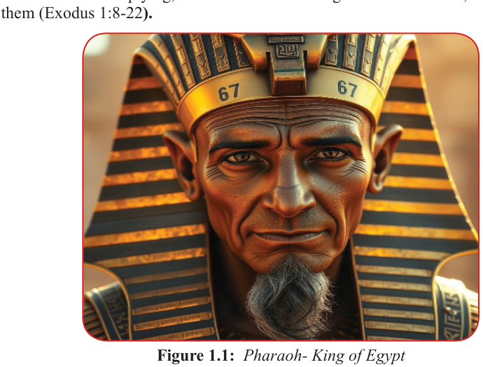

Form Two
Tanzania Institute of Education (TIE)
Bible Knowledge
5
prosperity are essentially fulfilled here as the number of the people of Israel
increased, and became stronger and prosperous in Egypt “...the descendants of Israel were fruitful and increased greatly, they multiplied and grew exceedingly strong, so the land was filled with them” (Exodus 1:1-7). In fact, God shows that He is a loving
God who compassionately takes care of His people and multiplies them.
Activity 1.5
Use library and reliable internet sources to find out how did God show His love through the prosperity of the Israelites in Egypt.
Oppression
Famine forced the sons of Israel to go down into Egypt as sojourners. Joseph, the protector of the Israelites died in Egypt, and the Pharaoh who knew Joseph died too.
All these were major turning points in the history of the life of Israelites in Egypt.
Now there arose a new king (Pharaoh) over Egypt who did not know Joseph, noticed the Israelites multiplying, he ordered measures against the Hebrews, and enslaved them (Exodus 1:8-22).


Figure 1.1: Pharaoh- King of Egypt
As recorded by historians, the new Pharaoh was not an Egyptian. The dynasty of
Hyksos kings came to rule parts of Egypt between ca.1638 -1530 BCE. The origin of this dynasty is rooted in the Near East. Most probably, this was the king who oppressed the Israelites. He introduced assaults to reduce the number of the sons of
Israel in Egypt. The assaults were the measures that Pharaoh used to wear down the
Hebrews. The key assaults with their consequences are listed below.
The first assault was forced labour. Pharaoh feared that the Hebrews would outnumber the natives and when war breaks, they would side with Egyptians’ enemies and